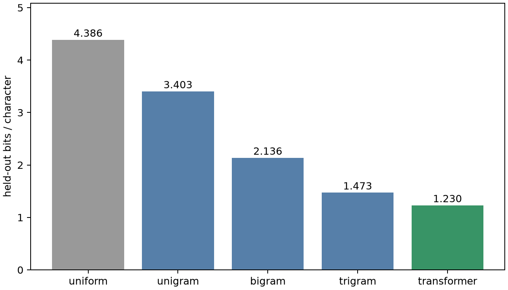
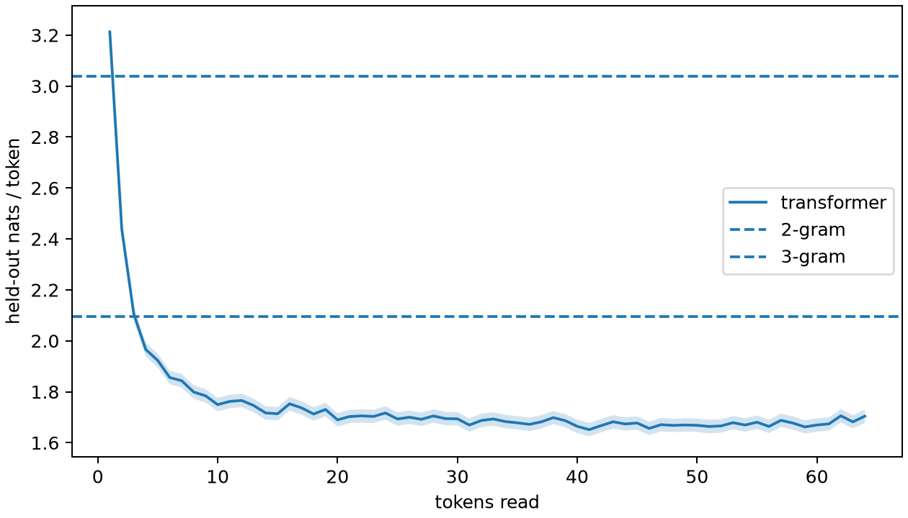
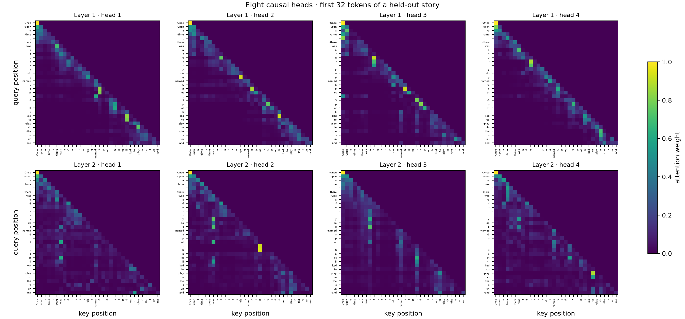

5 · Transformer 训练与生成
两层、宽 96 的因果模型达到 1.230 bits/字符，优于 4-gram 的 1.310。

相同验证文本上的 bits/字符

位置损失与上下文长度

Extension：两层共八个注意力头
五种模型的 60-token 样例
uniform · seed 1848 · 60 token
\x19R for>Ḩ�\x06\x074 d �/5myithBgch�b� bev�fd� On> so(�P�� saidrE�d""Z”\x1c�nts play mޕ7\x19 namedy
ngram_1 · seed 1848 · 60 token
spd to.etingonheheedent a g theedae.wr playumye he Heoureked cAd the epingotey b grendndcc s go ca had oided ss p
ngram_2 · seed 1848 · 60 token
Lily, there was very mad she a som we worited with it. Mick. She said. She flealan's the pris plag wat bared. re with elewing unt and anor
ngram_3 · seed 1848 · 60 token
Lily liked to do you thin b�4 d �/5myithBgch�b� bev�fd� On> so(�P�� saidrE�d""Z”\x1c�nts play more to shar
transformer · seed 1848 · 60 token
ily loved to eat and dream a new pretty next day, care for the bage, in a lawn. One day, where for stay carefully to ask
Transformer 的四种采样设置
temperature_0.8 · seed 1848
One day, a little boy named Tim went to the box. He saw a big dog on the held it. Tim was very happy and said, "Hi, my toy box. Jane, I bounced
top_k_20 · seed 1848
One day, a little boy named Tim went to the box. He saw a big dog on the cat. Tim wanted to play too. Tim was very happy and catried. He shook his mom and dad arou
top_p_0.9 · seed 1848
One day, a little boy named Tim went to the box. He saw a big dog on the cat. Tim wanted to play too. Tim was very happy and did not know what to do.
Tim's
min_p_0.1 · seed 1848
One day, a little boy named Tim went to the park. He saw a big red ball on the slide. Tim was very happy. He wanted to catch the ball to his friends. The ball bird c
卡方检验的上下文在抽样前按预测熵选择；第一版分布过于集中，失败记录保留在本机 artifacts。